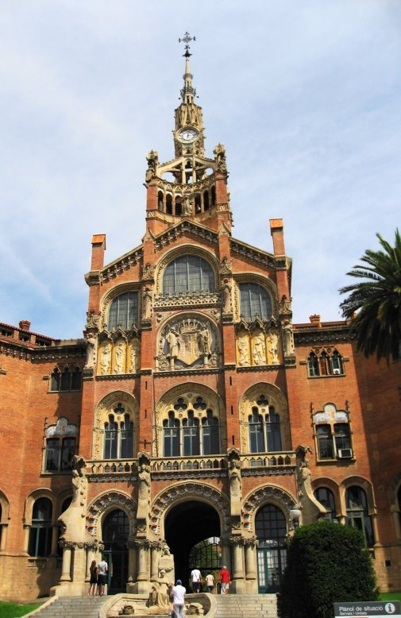
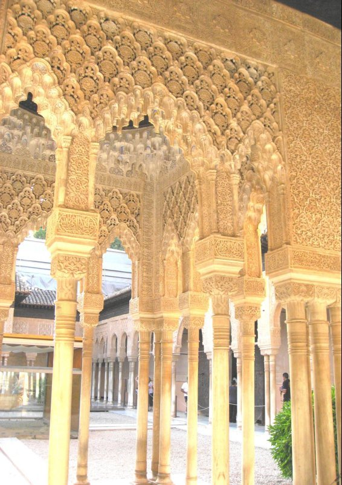
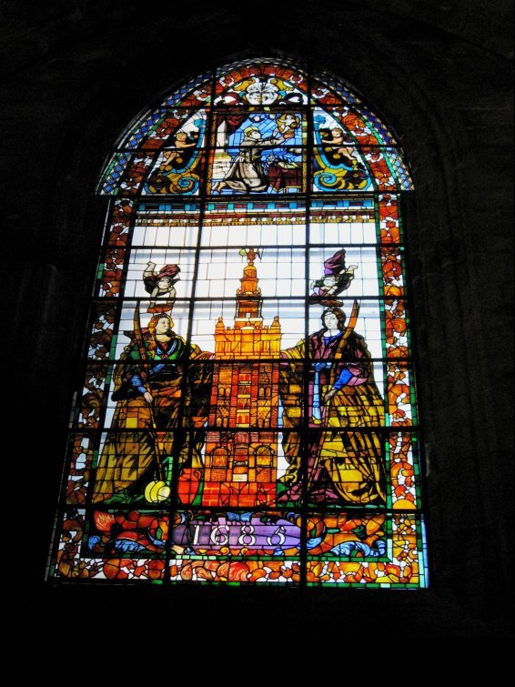
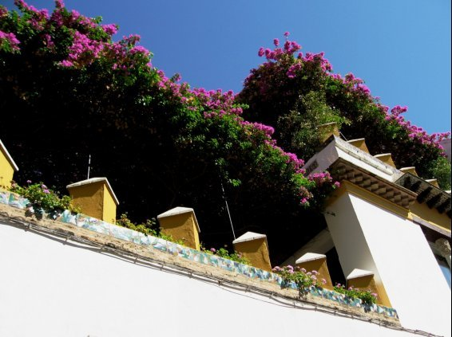
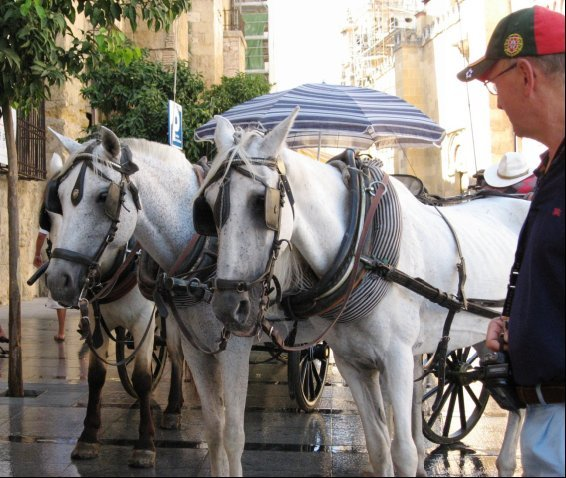

| 「咲良の旅」スペイン編 | |
| Unknown | |
| UNKNOWN (2014) | |
『咲良の旅写真集』
スペイン 編 1
１ ． グエル公園はバルセロナ市街を見下ろす小高い丘に英国式庭園住宅として造成されたが、
売れずに公園と生まれ変わった。バルセロナ市に寄贈されて現在では散歩やジョギングの市民の
憩いの場となっている。おとぎの国をイメージできる。
２ ． グエル公園の入り口門衛の小屋を見てサルバドール・ダリが「砂糖をまぶしたお菓子のようだ」と言ったのは有名だ。確かにメルヘンティクでヘンデルとグレーテルのお菓子の家を思わせる。
３．グエル公園 の 広場は公園の正面にある。破砕タイルで飾られた波打つベンチは抽象絵画の様に美しい。このベンチはガウディが人間工学を研究したもので、座り心地が良い。冬だったらずっと日にあたって座っていたいところだが夏は厳しい。
ベンチの下には犬の顔が並んでいる。
４．グエル公園の 広場の横から繋がる石の回廊。内側に傾いていて日陰になっている。
この回廊のアーチは鎖をたるませてそのカーブを描いたという。
５．グエル公園の正面を入ると階段の中央にトカゲがいる。この破砕タイルでつくられたトカゲは公園の人気者である。が、ゆえに傷つけられたり破損したりする出来事も起きている。
トカゲではなくサンショウウオとかドラゴンではとの説もある。
６．グエル公園の破砕タイルのトカゲ。

７．グエル公園の広場の横から繋がる石の回廊の日陰。
スペインの夏は暑い。日陰は貴重。夕刻でも４０度を下らないので、体感温度はさらに高い。さらに２２時くらいまでは青空がでている。
８．グエル公園広場から階段を下りると８６本の柱が立っている。この柱が上の公園広場を支えている。この柱の間にある４つのコラージュは四季を表現している。タイルや瓶の底などを使っている。ガウディの造形とジュジョールの色彩感覚が調和している。さらに感動するのはこの上の広場でこされた水がこの柱の空洞をおちて下に流れる。トカゲの口は噴水だった。
９．スペインの夏は非常に暑い。日陰は貴重な休息所。ヤシの木をイメージした石の回廊の上にはリュウゼツランが。そのためリュウゼツランの回廊ともいう。リュウゼツランは南米ではテキーラの原料になる。
１０．グエル公園の中心にあるギリシャ広場。それを囲む波上のベンチ。この１１０メートルの波状のベンチタイルの装飾から画家のミロは創作のヒントを得たという。
１１．グエル公園内にあり、ガウディが１９２６年に亡くなるまで住居していた家。彼は病気の父親と姪とメイドと約２０年をここで過ごしたという。現在は博物館となっている。当時の美しい家具やランプが見られる。

１２．サン・パウ病院の本部。サグラダファミリアと向かい合って建っている。モンタネールが手掛けたデハル様式で、最高傑作と言われるカタルーニャ音楽堂とともに世界遺産。
１３・サン・パウ病院前のハブ・ジルの像。彼は銀行家で、彼の遺言によってこの病院は建設された。
１４．サン・パウ病院はドメネク・モンタールの代表作。ドメネクは２５歳で建築学校の教授として就任。ガウディは彼の生徒だった。花や自然を愛し描き花の建築家とも呼ばれていた。彼の手がけた本部天井や病室の天井や壁は美しく装飾されている。
１５．サン・パウ病院は総敷地面積１４万５００㎡の中に４８のゴシック建築物やイスラム建築病院や礼拝堂が建ち並んでいる。この４８の建物は病院の通路として地下ですべて繋がっている。
１６．サグラダファミリアはバルセロナにあるカトリックのパシリカ（聖堂）。聖家族贖罪教会。
１８８２年に初代建築家ビャールが着工、１８８３年ガウディが後任となった。１９２６年ガウディが没後も建築は続行し現在に至っている。当初は教会ではなく寺院だったため国からの補助がなかったが、現在は民衆の手により資金援助が進んでいる。未完でありながら２００５年に世界遺産に登録されている。完成は２０２６年といわれている。
１７．サグラダファミリア正面の生誕のファザード。イエスの誕生を祝う彫刻。誕生から幼少期までが表わされている。日本の彫刻家家尾悦郎氏のフルーツや楽器を奏でる天使たちの作品も含まれている。作品は繊細で優美と高い評価を得ている。
１８．サグラダファミリアの内部。ガウディは自然界からデザインを発想していたので内部の様子もかなり自然界を感じる。教会内部に森林を造ろうとして、天井はシュロの形をしている。
１９．サグラダファミリアの受難のファザード。ガウディは聖堂の中ならず外部にまでキリスト教のシンボルを表現した。このキリスト教の最後の彫刻はスピラックスにより表現されている。
２０．サグラダファミリアの受難のファザード。直線的でシンプル。磔（はりつけ）刑のキリストの傍らに死の象徴である髑髏が転がっている。
２１．スペインのバスならではのカラフルバス。いっぺんに楽しくなりそう。遊園地のバスみたい。東京でも丸の内あたりから似たバスが観光用で使われている昨今。
２２．大きな鉄鍋で何人分かな？見た目はごみみたい。とり分けて食べる。
口にするのは勇気がいるが口に入れてしまえば良い味。魚貝の風味が日本人好み。
２３．スペインの高速道路の料金所は日本と同じ機械で自動化のブースと係員がいるブースとがある。ほとんどの区間が無料。４車線で２車線ずつ分岐していく。
制限速度は１２０㎞。スペイン人の運転はかなり荒いらしい。が、大阪の人と比べるとそうでもないとの噂あり。
２４．果てしなく広がるひまわり畑。畑を黄色で塗りつぶしている。
花が点描画のように見える。
２５．スペインのひまわりは作物が育たない荒野に栽培される。
緑肥景観用食物のひまわりは、菌根菌が共生する宿主作物として土壌を良くしながら景観を楽しみかつ油をとっている。ひまわり油は高水準の多価不飽和脂肪酸を含んでいる事で知られている。
２６．どこまでも作物の出来ない荒れた地が続く。「スペインの雨は広野（荒野）に降る」というオードリーヘップバーンの「マイフェアレイディ」のくだりを思い出さずにはいられない 。 The rain inSpain stays mainly in a plain . ６個のビー玉を口にいれて発音の猛特訓のイライザ。
２７．ラ・マンチャ地方カンポ・デ・クリプターナ（何もない街）の風車。
セルバンテスの小説「ドン・キホーテ」の舞台になった地方。
巨人のモデルになったのはどの風車なのだろうか。
２８．ラ・マンチャ地方のラ・マンチャはアラビア語で乾いた土地という意味。
夏の日差しは容赦ない。口の中まで乾燥する。肌に触れる衣服はまるでアイロンのかけたて。
ベビーカーの幼児が皆サングラスをかけているのも異様な光景。
２９．ごらんの通り有名なレストランですが開放されている。すなわち冷房がない。
日本では想像ができない。確かに日陰と日向の温度差はあるが。
そしてアイスドリンクがない。日本のようにキンキンに冷えたビールも氷がいっぱい入ったジュースもない。スペイン人いわく「体を冷やすのは良くない。なぜ氷が必要？」
バルでアイスコーヒーもなかった。
３０．お洒落な色合いの庭先。ドン・キホーテのいるレストランの庭。
３１．太陽の光を遮るために壁は白い。窓は小さい。
白い壁が続いて美しい。
３２．地中海性気候のスペインの夏は乾燥している。土地は痩せているもののオリーブ畑がはるかに続く。スペインのオリーブの木の数は人口をはるかにうわまわる。
オリーブ畑は約２０２万ヘクタール、世界のオリーブ畑の２７％にあたる。
３３．スペインは再生可能エネルギーの採用に熱心。風力発電と水力、太陽光で電力供給の４割を超える。ラ・マンチャ地方は特に風が強い。
３４．イベリア半島最後のイスラム王朝の都グラナダ。イスラム建築の最高傑作といわれているアルハンブラ宮殿は歴代の王が住んでいた。ここは馬車の門。ここから城壁に入る。
３５．アルハンブラ宮殿の中核をなすのは宮廷部分である王宮。王の正妻と愛人が暮らしたハーレム宮。
３６．アルハンブラ宮殿（アラヤネスのパティオ）
長方形の池を大理石の柱がアーチの回廊となって囲んでいる。両側に４人の正室の部屋がそれぞれある。アラヤネスは池の両側に咲く天人花。

３７．アルハンブラ宮殿ライオンのパティオ
スルタン（イスラム王）の居住空間。円形の噴水の周りを１２頭の白大理石のライオンが囲む。

３８．アルハンブラ宮殿アペンセラックスの間
部屋の床にはライオンの噴水より冷たい水が流れ、天井からは熱い空気が出ていく。天然の冷房装置である。涼しい。
３９．アルカサバ。アルハンブラの砦。グラナダの街を一望できる。
アルハンブラの中では一番始めに造られた。
４０．アルハンブラ宮殿 へネラリフェ アセキアのパティオ
へネラリフェは天 上の庭という意味。夏の別荘。アルハンブラ宮殿の北側、太陽の丘にある。
長い池の周りには花壇、噴水、柱廊が見られる。
４１．アルハンブラ カルロス５世宮殿。
スペインのルネッサンス建築の代表。キリスト教の勢力の優位を示したかった。
４２．アルハンブラ パルタル宮（貴婦人の塔）はアルハンブラで一番古い宮殿。ムハマド３世により建設、ユースフ１世により、４世紀初めに増築。
この池は３５０人もの女たちが水浴したり水面で化粧をしたりしていたハレム。
パルタルは出産の意味。ハレムとして女たちの聖域だった。
４３．アルハンブラ へネラリフェよりアルバイシンを臨む。
アルバイシンはグラナダの丘陵地区。中世ムーア人の統治時代の建築様式を残す白壁の家と石畳の構成。
４４．パルタル庭園からサンタ・マリア・デ・ラ・アルハンブラ教会。
４５．アルハンブラ宮殿内にあるホテルパラドール・デ・グラナダ。回廊に囲まれたパティオにレストランがあり、王宮やフェネラリフェ庭園へ手軽に行かれる場所にある。以前はパラドール・ナショナル・デ・サンフランシスコと言い１５世紀には修道院として使われていた。イスラムと ヨーロッパの両文化が融合したデザインが特徴。宿泊費並びにレストラン等の食事、飲み物はかなり高い様子だ。
４６．１８３２年に「アルハンブラ物語」を書いたワシントン・アービングがこの部屋に滞在した。この本によって欧米諸国にアルハンブラ宮殿が知られるようになった。「アルハンブラ物語」はアルハンブラ宮殿に関する旅行記、伝説集。
４７．スペイン南部アンダルシア地方のグラナダはナスル朝の首都として２５０年も栄えた。
アルハンブラ宮殿は「アンダルシアの宝石」と言われ広大な敷地にさまざまな施設を持つ。
４８．フぇネラリフェ庭園の水路。糸杉の道。１２０メートル。
糸杉はギリシャ神話で美少年キュパリッソスが姿を変えられたものと言われた。
花言葉は「死」。腐りにくいため彫刻や棺に使われた。墓地に良く植えられる。
根は真下にまっすぐ伸び墓をあらすこともない。ゴッホはこの糸杉をたくさん描いている。
４９．イベリア半島とアフリカの北端を隔てるジブラルタル海峡はスペインとモロッコ間１４㎞。
肉眼で対岸を見ることは可能。日本でいうと津軽海峡位。
５０．路地にテーブルがおかれ太陽の下でも平気だ。パラソルさえないカフェもある。
勿論真夏でも冷房はない。暑さに慣れるという暑さではない。かなりきつい。
５１．ミハスの可愛いお店
白壁にくっきり鮮やかなお土産屋さん。何か見つけよう。じっくりと。
５２．ミハスの白い街並みは多くの人の憧れでもあるが実用性をもっている。熱い太陽の
日差しを遮るために毎年３月にはさらに白く塗り替えるという。
道は細く、窓は小さく、壁は白くというのが生活の知恵。
５３．ミハスの白い街。ミハスから１０数キロ進むとイギリス領ジブラルタル海峡。
５４．ミハスはコスタ・デ・ソル（太陽の海岸）の山麓にある白い村。
白壁にベージュの屋根、ヨーロッパの金持ちの別荘地。標高４２８ｍ、人口３５０００人。
タクシーの代わりのロバタクシーは美しい刺繍の馬具をつけて名物。が、ロバ臭くなるのは否めない。
５５．セビリアの大聖堂の中にある、スペインの４人の王がコロンブスの棺をかついでいる。本当に棺の中にコロンブスがいるのか疑わしいが。
イタリアのジュリエット像の左胸と同じく担いでいる王たちはなでられてピカピカ。何の御利益だったか。
５６．セビリア大聖堂のヒラルダ（風見）の塔はかつてのモスクの尖塔であった大聖堂に付設された鐘楼。高 さ 9 8 ｍ、底 辺 1 4 ｍ、壁の厚 さ 2. 5 ｍ。
先端の女像の旗が回って（ヒラール）して風向きを知らせている。
内部は階段がなくてスロープになっていて馬で駆けあがれる。最上階は７０ｍでセビリアの街が一望できる。
５７． セビリアの大聖堂（カテドラル）は１５世紀から１世紀かけて造られた。
幅１１６ｍ奥行き７６ｍ。トレドの大聖堂とスペイン最大の聖堂争いをしている。いまだ決着がつかないとか。世界遺産に登録されている。
５８．セビリアの大聖堂。ムデハル様式。イスラム教徒の建築様式にキリスト教の建築様式が融合した珍しいスペインの建築スタイル。大聖堂の中には黄金のついたてがあり中央にイエスではなくマリアが鎮座している。スペインは当時マリア信仰が強くセビリアはその中心地だった。
５９．セビリアのスペイン広場（マリア・ルイサ公園）。１９２９年にイベロ・アメリカ博覧会会場として造成された。スペイン各県の歴史的場面等が陶器タイルにて描かれている。
６０． セビリアのスペイン広場
万博のパビリオンというより宮殿のような建物。「アラビアのロレンス」「スターウォーズ エピソード２」のロケで使われている。
６１．カラフルなトラムにスペイン人の姿。明るくゆっくり時が流れている。
スペインでは業種にもよるがシエス タ( 昼食後昼 寝) の習慣がある。
朝から午後１ 時 3 0 分位まで働き５時位までシエスタ。それからまた８時か９時まで働く。スペイン人の元気と長寿はシエスタにあるらしい。暑い国ならではのシエスタ。
６２．トレドの大聖堂、サンタ・マリア・デ・トレド大聖堂。内部には金色の鉄作に囲まれたゴシック装飾が華麗なマヨール礼拝堂。鐘楼の高さは９０ｍ。新約聖書と聖徒をテーマにした７５０枚のステンドグラスがある。
６３．トレドの大聖堂はムデハル様式などスペイン独特の建築で、スペインの代表的なカトリックの大聖堂。美術品の宝庫となっている聖具室の正面にはエル・グレコの「聖衣剥奪」がある。
６４．トレドはカスティーリャ・ラ・マンチャの中心地。タホ川に囲まれた高台にある旧市街地は城壁に囲まれている。
街中は細い路地が迷路のように入り組んでいて徒歩での観光が望ましい。キリスト教、イスラム教、ユダヤ教の三つの宗教の文化が混在している。
６５．トレド旧市街地中央にあるアルカサールは４本の塔がそれぞれの角に立ち４面とも造りが違う。トレド独特のルネッサンス様式。１１世紀にアルホンソ６世がイスラム教徒からトレドを守る要塞として建築。この旧市街地は世界遺産に登録されている。
６６．トレドには此の地を拠点に活動していたギリシャ出身のエル・グレコがいる。
サント・トメ教会には世界三大絵画の一つとされている彼の作品「オルガス伯爵の埋葬」がある。
天界と現生が上下に二分されているにも関わらず十字架が一つの画面としている。
６７．トレドの街は暑さを避けるため道は狭く日陰が多い。
敵に侵入される事も考慮して迷路のように道を造ったという。
日差しと日陰、光と影が常に同居の街である。
６８．シーフードパエリア。魚貝とのスープとサフランの香りが絶妙なマリアージュ。
辛口白ワインやロゼワインが合いそうだがスぺインではやはりヘビーなリオハでも。
このパエリアの香辛料サフランはアラビア語で黄色を意味し強い着色力を持つ。
ラマンチャのサフランは最高級品。
６９．スペイン語でビールはセルベッサ。生ビールはカニャ。
Maho u （マオウ） は 189 0 年創業のマオーサン・ミゲル社の商品。
ビールはフランス語ではピエール、イタリア語ではビッラ、ドイツ語オランダ語ではビール。
スペイン語は全く違う。スペイン語のセルベッサ （ servez a ）は英語で穀物を意味するシリアル （ sereal ）からきているから。
７０．コルドバ聖マリア大聖堂、メスキータ。アラビア語メスキータはスペイン語でモスクを意味する。モスクは膝まづく場所という意味。
メスキータはイスラム教とキリスト教が同居する珍しい建築。
また、メスキータはアミナール（回教寺院の塔）、オレンジのパティオ、柱の森で構成されている。

７１．セルビア大聖堂のステンドグラス。「サンタ・フェスタとサンタ・ルフィナ。間にはヒラルダの塔」ステンドグラスは装飾的なものもあるが起こりは布教のためだった。字が読めない人にも教えが理解できるようにと。
７２．コルドバ メスキータのミフラープの天蓋。メスキータ礼拝の間にある神殿の方向の目印となる窪み。
７３．コルドバの花の小道
コルドバのユダヤ人街では白壁に花を飾り付けて狭い通りを美しく飾った。この美しい風景が観光地化したという。ここ狭しと観光客が行きかう。通りの突き当りはメスキータの鐘楼。
７４．白い壁に青い空、鮮やかな花。どこをとっても画になる。絵葉書を買う必要ないくらいに鮮やかな写真が撮れる。

７５．白壁に赤い花というのがこの国のスタイルの様だ。見た目はお洒落だが
頭上に注意したい。

７６．メスキータにはオレンジのパティオがあり、沐浴ができたという。
オレンジの木にはたわわに実がなっている。
今はオレンジの並木だが昔はナツメヤシや月桂樹の並木だったという。
７７．バルのカウンターの上には生ハムや香辛料がぶらさがっている。商品であるにも関わらずお洒落に感ずる。生ハムの下側には油うけがつけてある。
カウンターで薄く切ってだしてくれる、時間はのんびりだがおいしい。日本の生ハムは塩分が強いがスペインの生ハムは熟成されていて甘い。
７８．ミハスの白い建物に良く似合うカラフルな店。中には扇子がみえる。
やはり土産物屋だろうか。
７９．服のみならず鮮やかな商品が無造作に並んでいる。灼熱の太陽に似合う色は原色の様だ。
焦げた膚色に良く似合う。白い建物にも良くはえる。
８０．ＡＶＥはスペイン国鉄が運行する高速鉄道。
ＡＶＥ は Alta VelocidadEspanol a といい、スペイン語で鳥の意味。
翼を広げた鳥がシンボルマーク。
マドリードとセビリア間はフランスのＴＧＶの提供を受けている。
座席が進行方向と逆になって走る場合が多い。
８１．アトーチャ駅はマドリードにあるレンフェ（スペイン国鉄）の運営する駅でマドリード最大の鉄道駅。駅内には植物園があり、熱帯雨林のような緑の空間が設けられている。遊歩道を歩いて待ち時間を過ごせるようになっているが、湿度も高くそれほど快適な空間ではない。
８２．プラド美術館は１５世紀以来の歴代の王家のコレクションを展示する世界最大級の国立絵画美術館。１７０００点を超える収蔵品のうち絵画は約７６００点。宮廷画家のベラスケス、ゴヤ、エル・グレコなどの作品を収蔵。
８３．プラド美術館前にあるベラスケスと並んでスペインを代表とする偉大な画家ゴヤの像。ゴヤはカルロス４世に仕えた宮廷画家で「マドリッド１８０８年５月３日プリンシベ・ビオの丘での銃殺」「裸のマヤ」「着衣のマハ」「日傘」「我が子を喰らうサトゥルヌス」などが有名。特にゴヤが代表する作品は「カルロス４世の家族」。美術館正面にはベラスケスの像がある。
ベラスケス門、左右のゴヤ門、ムーリョ門があるが、ベラスケス門は使われていない。
８４．サン・へロニモ・エル・レアル教会はプラドの庭園とならんで建てらてている。マドリード最古の宗教建造物で、マドリードに残る唯一のゴシック様式の教会。あまり情報がない教会。
８５．マドリードのスペイン広場は「ドン・キホーテとサンチョ・パンサの像」など
セルバンテスの３００年を記念した像がいくつもある。
この塔には、やせ馬ロシナンテにのったドン・キホーテと従者サンチョ・パンサを
見下ろしているセルバンテスがいる。
８６．マドリッドのスペイン広場の「ドン・キホーテとサンチョ・パンサの像」の塔のてっぺんに乗っているの は4 大陸（オーストラリアはまだ発見されていない）の人々がこの作品を読んでいる。「ドン・キホーテ」は全世界で聖書の次に読まれている作品。
８７．マドリードのマクドナルドは世界一豪華な店舗と言われている。
店内の床は大理石でできていてまるでホテルのようだ。観光では必ず紹介されているようだが、種明かしをすれば、もともとは宝石店だった。
８８．フラメンコショウ。
マドリードの夜、スペイン料理やドリンクを堪能しながらフラメンコを見る。
ダンサーは皆良い体格をしていて迫力がある。思っていたよりショー的で情熱的なのものが
一つまみ足りない感じ。
８９．フラメンコ衣装店。フラメンコが見られるホールの向かい側にフラメンコ衣装の店。カラフルな衣装が目をひく。ガラス越しの衣装はスリムだがダンサーはみな太めだ
。